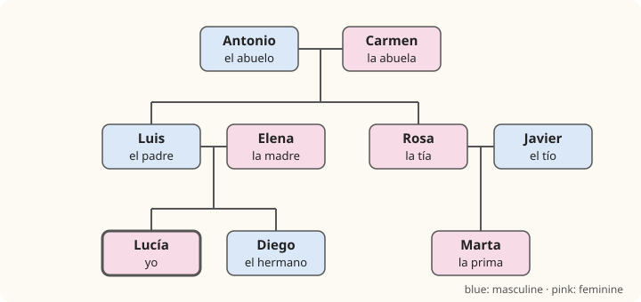

Lesson 7: Family and Describing People¶
La familia y las descripciones
Sooner or later every conversation in Spanish turns to the family. People ask whether you have brothers and sisters, how old your children are, what your partner is like, and they show you photos on their phones with real enthusiasm. In this lesson you learn the words for the members of a family, the possessive words my, your, his, our, and how to describe what people look like and what they are like as people. Along the way you will meet the most important rule of Spanish adjectives: they agree with the noun they describe, in gender and in number.
Learning outcomes
By the end of this lesson you will be able to:
- name the members of your family and talk about them;
- use the possessive adjectives mi, tu, su, nuestro, vuestro and make them agree;
- make any adjective agree with its noun and put it in the right place;
- describe people's appearance with ser, tener and llevar, and their character with ser;
- soften or strengthen a description with muy, bastante, un poco and nada.
masculinefeminineplural
7.1 Dialogue: photos of the family¶
After class, Lucía shows Daniel some photos of her family on her phone.
- Daniel: ¿Quién es este señor? — Who is this man?
- Lucía: Es mi padre, Luis. Es médico. — That's my father, Luis. He's a doctor.
- Daniel: Es muy alto. ¿Y la mujer rubia? — He's very tall. And the blonde woman?
- Lucía: Es mi madre, Elena. Es simpática y muy divertida. — That's my mother, Elena. She's nice and really funny.
- Daniel: ¿Tienes hermanos? — Do you have any brothers or sisters?
- Lucía: Sí, tengo un hermano. Se llama Diego y tiene diecisiete años. — Yes, I have a brother. His name is Diego and he's seventeen.
- Daniel: ¿Es el chico de pelo largo? — Is he the boy with the long hair?
- Lucía: Sí, es él. Es un poco tímido, pero es muy inteligente. — Yes, that's him. He's a bit shy, but he's very clever.
- Daniel: ¿Y estos señores mayores? — And this older couple?
- Lucía: Son mis abuelos, Antonio y Carmen. Viven con nosotros. — They're my grandparents, Antonio and Carmen. They live with us.
- Daniel: ¡Qué familia tan grande! Yo soy hijo único. — What a big family! I'm an only child.
- Lucía: ¿Y cómo son tus padres? — And what are your parents like?
- Daniel: Mi madre es baja y morena, y lleva gafas. Mi padre es bastante serio, pero es un buen hombre. — My mother is short and dark-haired, and she wears glasses. My father is quite serious, but he's a good man.
Notice:
- hermanos in Daniel's question means "brothers and sisters", not only "brothers". A masculine plural covers a mixed group, just as nosotros does (Lesson 2).
- The adjectives change with the person: mi padre es alto but mi madre es baja; simpática and divertida end in -a because they describe a woman.
- Age uses tener: tiene diecisiete años, literally "he has seventeen years" (Lesson 3).
- un buen hombre: the adjective bueno comes before the noun here and loses its final -o. Section 7.4 explains why.
7.2 Vocabulary: the family and describing people¶
The family¶

| Masculine | Feminine | Plural (mixed group) | English |
|---|---|---|---|
| el padre | la madre | los padres | father, mother, parents |
| el hijo | la hija | los hijos | son, daughter, children |
| el hermano | la hermana | los hermanos | brother, sister, siblings |
| el abuelo | la abuela | los abuelos | grandfather, grandmother, grandparents |
| el nieto | la nieta | los nietos | grandson, granddaughter, grandchildren |
| el tío | la tía | los tíos | uncle, aunt, uncles and aunts |
| el primo | la prima | los primos | cousin (male, female), cousins |
| el sobrino | la sobrina | los sobrinos | nephew, niece, nephews and nieces |
| el marido, el esposo | la mujer, la esposa | los esposos | husband, wife, husband and wife |
| el novio | la novia | los novios | boyfriend, girlfriend; also groom, bride |
| el suegro | la suegra | los suegros | father-in-law, mother-in-law |
| el cuñado | la cuñada | los cuñados | brother-in-law, sister-in-law |
Table 7.1. Family words. Almost all of them follow the pattern -o for a man, -a for a woman.
A few more useful words and phrases:
| Spanish | Sounds like | English |
|---|---|---|
| la familia | [fah-MEE-lyah] | the family |
| papá, mamá | [pah-PAH, mah-MAH] | dad, mum |
| el bebé | [beh-BEH] | the baby (for boys and girls alike) |
| hijo único, hija única | [EE-hoh OO-nee-koh] | only child (boy, girl) |
| mayor | [mah-YOR] | older; elderly (polite) |
| menor | [meh-NOR] | younger |
| mi hermano mayor | my older brother | |
| mi hermana menor | my younger sister | |
| casado, casada | [kah-SAH-doh] | married |
| soltero, soltera | [sohl-TEH-roh] | single |
| divorciado, divorciada | [dee-bor-SYAH-doh] | divorced |
| la pareja | [pah-REH-hah] | partner, couple |
Table 7.2. More family vocabulary. The j of hijo and pareja is the throaty sound of Lesson 1.
Common mistake: parents are not relatives
los padres means "the parents". The word for "relatives" is los parientes or los familiares. So Tengo muchos parientes en Chile means "I have a lot of relatives in Chile".
What people look like¶
| Spanish | Sounds like | English |
|---|---|---|
| alto / alta | [AHL-toh] | tall |
| bajo / baja | [BAH-hoh] | short |
| delgado / delgada | [dehl-GAH-doh] | slim |
| fuerte | [FWEHR-teh] | strong, well-built |
| guapo / guapa | [GWAH-poh] | good-looking |
| joven | [HOH-behn] | young |
| mayor | [mah-YOR] | old, elderly (polite) |
| rubio / rubia | [RROO-byoh] | blond, fair-haired |
| moreno / morena | [moh-REH-noh] | dark-haired; also dark-skinned or tanned |
| pelirrojo / pelirroja | [peh-lee-RROH-hoh] | red-haired |
| el pelo largo / corto | [PEH-loh LAR-goh / KOR-toh] | long / short hair |
| el pelo rizado / liso | [rree-SAH-doh / LEE-soh] | curly / straight hair |
| los ojos azules / verdes / marrones | [OH-hohs ah-SOO-lehs] | blue / green / brown eyes |
| la barba, el bigote | [BAR-bah, bee-GOH-teh] | beard, moustache |
| las gafas | [GAH-fahs] | glasses (Spain) |
| los lentes, los anteojos | [LEHN-tehs, ahn-teh-OH-hohs] | glasses (Latin America) |
Table 7.3. Appearance.
What people are like¶
| Spanish | English | Spanish | English |
|---|---|---|---|
| simpático | nice, friendly | antipático | unfriendly |
| divertido | fun, funny | aburrido | boring |
| trabajador | hard-working | perezoso | lazy |
| abierto | open, outgoing | tímido | shy |
| alegre | cheerful | serio | serious |
| generoso | generous | tacaño | mean, stingy |
| tranquilo | calm | nervioso | nervous, restless |
| amable | kind | inteligente | intelligent |
Table 7.4. Character, in pairs of opposites. They are given in the masculine singular, the form found in a dictionary.
False friend: sensible
sensible means "sensitive", not "sensible". A sensible person is sensato or razonable. Likewise, simpático means "nice, likeable", not "sympathetic".
7.3 Grammar: possessive adjectives¶
The possessive adjectives are the words for my, your, his, her, our, their. They go before the noun, and in Spanish they agree with the thing possessed, not with the owner.
| Owner | with a singular noun | with a plural noun | English |
|---|---|---|---|
| yo | mi hermano | mis hermanos | my |
| tú | tu hermano | tus hermanos | your (tú) |
| él, ella, usted | su hermano | sus hermanos | his, her, its, your (usted) |
| nosotros | nuestro hermano, nuestra hermana | nuestros hermanos, nuestras hermanas | our |
| vosotros | vuestro hermano, vuestra hermana | vuestros hermanos, vuestras hermanas | your (vosotros, Spain) |
| ellos, ellas, ustedes | su hermano | sus hermanos | their, your (ustedes) |
Table 7.5. Possessive adjectives. Practice hides the possessives.
Three things to notice:
- Only nuestro and vuestro have a feminine. mi, tu and su have just a singular and a plural: mi padre, mi madre, mis padres.
- Agreement is with the noun. nuestra casa ("our house") is feminine because casa is feminine, even if the owners are all men. mis libros is plural because there are several books, even though there is only one owner.
- No written accent on tu. tu without an accent is "your"; tú with one is "you" (Lesson 2): Tú tienes tu libro. — You have your book.
The many meanings of su¶
su can mean his, her, its, your (usted), their or your (ustedes). Usually the context makes it clear. When it does not, Spanish replaces it with the article + noun + de + the owner:
| Ambiguous | Clear | English |
|---|---|---|
| su coche | el coche de él | his car |
| su coche | el coche de ella | her car |
| su coche | el coche de usted | your car (usted) |
| su coche | el coche de ellos | their car |
Table 7.6. Making su clear. In Latin America the word for car is usually el carro or el auto.
There is no 's in Spanish¶
English says "Ana's mother". Spanish has no apostrophe s: it says "the mother of Ana".
- la madre de Ana — Ana's mother
- el marido de mi hermana — my sister's husband
- los hijos de mis tíos — my aunt and uncle's children (my cousins)
- la casa del profesor — the teacher's house (de + el = del, Lesson 4)
Worked example: whose is it?
Say "Our grandmother is Pedro's mother's mother."
- "Our grandmother": abuela is feminine singular, so nuestra abuela.
- "Pedro's mother" becomes "the mother of Pedro": la madre de Pedro.
- "the mother of Pedro's mother": la madre de la madre de Pedro.
Result: Nuestra abuela es la madre de la madre de Pedro. A natural speaker would of course simply say Es la abuela de Pedro.
7.4 Grammar: adjectives, agreement and description¶
Agreement: one adjective, up to four forms¶
An adjective takes the gender and the number of the noun it describes. How many forms it has depends on its ending.
| Type | Masc. singular | Fem. singular | Masc. plural | Fem. plural |
|---|---|---|---|---|
| ends in -o | alto | alta | altos | altas |
| ends in -e | alegre | alegre | alegres | alegres |
| most consonants | azul | azul | azules | azules |
| -dor, nationality | trabajador | trabajadora | trabajadores | trabajadoras |
Table 7.7. The forms of adjectives. Practice hides the endings.
The plural follows the rules for nouns that you met in Lesson 4: add -s after a vowel, -es after a consonant. Watch the spelling changes:
- z becomes c before -es: feliz → felices ("happy").
- A written accent appears or disappears to keep the stress where it was: joven → jóvenes, but inglés → ingleses (Lesson 1 explains why).
A mixed group takes the masculine plural: Mi hermano y mi hermana son altos. — My brother and sister are tall.
Position: usually after the noun¶
Most descriptive adjectives come after the noun, the opposite of English:
- un chico alto — a tall boy
- una mujer simpática — a nice woman
- unos ojos verdes — green eyes
- las casas blancas — the white houses
Words of quantity and number come before the noun, as in English: dos hermanos, muchos primos, pocos amigos.
Bueno, malo, grande: the short forms¶
Three very common adjectives often go before the noun, and then they lose letters:
| Adjective | Before a masc. singular noun | Before a fem. singular noun | Example |
|---|---|---|---|
| bueno | buen | buena | un buen amigo, una buena amiga |
| malo | mal | mala | un mal día, una mala idea |
| grande | gran | gran | un gran hombre, una gran ciudad |
Table 7.8. Short forms before the noun. In the plural there are no short forms: buenos amigos, grandes ciudades.
bueno and malo mean the same before or after the noun (un buen libro and un libro bueno are both "a good book"; before the noun is more common). With grande the meaning changes:
- un hombre grande — a big man (size)
- un gran hombre — a great man (importance)
Describing people: ser, tener, llevar¶
Spanish uses three verbs where English mostly uses "be" and "have".
| Verb | For | Examples |
|---|---|---|
| ser | build, looks and character: what someone is | Es alta y delgada. Es muy simpático. |
| tener | hair, eyes, a beard, age: what someone has | Tiene el pelo rizado. Tiene los ojos azules. |
| llevar | glasses, clothes, sometimes a beard: what someone wears | Lleva gafas. Lleva barba. |
Table 7.9. Three verbs for describing.
You know the forms of ser (Lesson 5) and of the regular verb llevar (Lesson 6). tener is irregular and is taught fully in Lesson 10; for now, use these three forms as phrases: tengo (I have), tienes (you have), tiene (he, she has; you have, usted).
Spanish uses the definite article with hair and eyes: tiene el pelo largo, literally "she has the hair long". The adjective agrees with pelo (masculine singular) or ojos (masculine plural), not with the person: a woman tiene el pelo rubio, but she es rubia.
To ask for a description, use ¿Cómo es? ("What is he or she like?"). Remember from Lesson 5 that ¿Cómo está? asks how someone is feeling at the moment.
- ¿Cómo es tu novio? — Es alto, tiene el pelo corto y es muy divertido. — What's your boyfriend like? — He's tall, has short hair and is great fun.
- ¿Cómo está tu abuela? — Está un poco cansada. — How is your grandmother? — She's a bit tired.
Muy, bastante, un poco, nada¶
| Spanish | English | Example |
|---|---|---|
| muy | very | Es muy alto. |
| bastante | quite, rather | Es bastante serio. |
| un poco | a little, a bit | Es un poco tímida. |
| no … nada | not at all | No es nada aburrido. |
| demasiado | too | Es demasiado joven. |
Table 7.10. Words that make an adjective stronger or weaker. They never change their form before an adjective.
Un poco is for the negative side
As in English, un poco sounds natural with qualities that are not entirely positive: un poco tímido, un poco nervioso. To praise, use muy or bastante. For a strong compliment, Spanish speakers love the ending -ísimo: guapísimo ("really good-looking"), simpatiquísima ("so nice").
Common mistake: gordo and viejo
gordo ("fat") and viejo ("old") are correct words but blunt when said about a person. Say un poco grande or fuerte, and mayor for an older person: mi abuelo es mayor.
7.5 Practice¶
Make it agree¶
Read each phrase aloud, then change it to the feminine and to the plural.
| Masculine singular | Feminine singular | Masculine plural |
|---|---|---|
| un primo simpático | una prima simpática | unos primos simpáticos |
| mi tío alegre | mi tía alegre | mis tíos alegres |
| el abuelo trabajador | la abuela trabajadora | los abuelos trabajadores |
| nuestro hijo joven | nuestra hija joven | nuestros hijos jóvenes |
| un buen amigo | una buena amiga | unos buenos amigos |
| un niño feliz | una niña feliz | unos niños felices |
Table 7.11. Agreement drill.
Who is it?¶
Listen to each description and point to the person in Figure 7.1.
- Es el padre de Lucía y el marido de Elena. — (Luis)
- Es la hija de Rosa y Javier. — (Marta)
- Son los padres de Luis y de Rosa. — (Antonio and Carmen)
- Es el hermano de Lucía y el primo de Marta. — (Diego)
- Es la tía de Diego. — (Rosa)
Say it
Describe someone in your family in four sentences: who they are, what they look like, one thing they have or wear, and what they are like. For example:
Mi hermana se llama Emma. Es alta y rubia. Tiene los ojos verdes y lleva gafas. Es muy divertida, pero un poco perezosa.
7.6 Culture: the family in Spain and Latin America¶
Close and extended. In Spanish-speaking countries the family usually plays a larger part in daily life than in much of the English-speaking world. Grandparents often help to bring up the grandchildren, and a long Sunday lunch with parents, grandparents, aunts, uncles and cousins is a weekly custom in many families. It is common for young adults to live with their parents until they are well into their twenties, or until they marry, both because housing is expensive and because it is considered normal.
Godparents. The padrino (godfather) and madrina (godmother) often remain important figures throughout a child's life. In Mexico and other parts of Latin America the parents and godparents of a child call each other compadre and comadre, a relationship close to family.
Affectionate words. Diminutives with -ito, -ita express affection: abuelito, abuelita, hermanito. They are used everywhere but especially often in Latin America. In Mexico you will hear mija and mijo (from mi hija, mi hijo) as terms of endearment, even for people who are not one's children.
Regional words for describing people.
| Meaning | Spain | Latin America |
|---|---|---|
| glasses | las gafas | los lentes, los anteojos |
| brown (eyes) | marrones | marrones; in Mexico and Central America cafés |
| cute, pretty | mono, mona | lindo, linda |
| fair-haired, light-skinned | rubio | rubio; in Mexico güero |
| husband, wife | marido, mujer | esposo, esposa (more common) |
Table 7.12. Some regional differences.
Moreno. moreno can mean "dark-haired", "dark-skinned" or simply "tanned" (estás muy moreno, "you've got a good tan"). It is a neutral, everyday word in Spain; in some parts of Latin America other words are preferred for skin colour, and it is best to describe hair and eyes rather than skin.
7.7 Summary¶
Summary
- Family: padre, madre, hijo, hija, hermano, hermana, abuelo, abuela, tío, tía, primo, prima. A masculine plural covers a mixed group: los padres = parents, los hermanos = brothers and sisters.
- Possessives agree with the thing possessed: mi, mis; tu, tus; su, sus; nuestro, nuestra, nuestros, nuestras; vuestro … When su is unclear, say el coche de ella. There is no 's: la madre de Ana.
- Adjectives agree in gender and number (alto, alta, altos, altas); those in -e and most consonants have no feminine. They normally follow the noun.
- bueno → buen, malo → mal before a masculine singular noun; grande → gran before any singular noun, meaning "great".
- Describing: ser for build and character, tener for hair, eyes and age, llevar for glasses. ¿Cómo es? asks for a description.
- Degree: muy, bastante, un poco, no … nada, demasiado.
7.8 Exercises¶
Exercise 1
Your mother's sister is your …?
Answer
tía. Es mi tía.
Exercise 2
Give the Spanish for "my parents".
Answer
mis padres. mis padres. Plural noun, so plural possessive.
Exercise 3
Give the Spanish for "our grandmother".
Answer
nuestra abuela. nuestra abuela. abuela is feminine, so nuestra.
Exercise 4
Give the feminine of trabajador.
Answer
trabajadora. trabajadora. Adjectives in -dor add -a.
Exercise 5
Give the plural of joven.
Answer
jóvenes. jóvenes. The written accent keeps the stress on the same syllable.
Exercise 6
Translate "a good friend" (a man).
Answer
un buen amigo. un buen amigo. Before a masculine singular noun, bueno becomes buen.
Exercise 7
Complete with the right verb: Mi hermana ___ los ojos verdes.
Answer
tiene. Mi hermana tiene los ojos verdes. Eyes and hair go with tener.
Exercise 8
Marta está con Pablo. Su coche es rojo. Rewrite the second sentence so that it clearly means "Her car is red."
Answer
El coche de ella es rojo. El coche de ella es rojo.
Exercise 9
Correct the mistakes: Mi hermanas son muy altos y simpático.
Answer
Mis hermanas son muy altas y simpáticas. The possessive and both adjectives must be feminine plural to agree with hermanas.
Exercise 10
Describe this person in Spanish: Carlos, your cousin, is tall and slim, has short curly hair, wears glasses and is quite shy but very kind.
Answer
Mi primo Carlos es alto y delgado. Tiene el pelo corto y rizado y lleva gafas. Es bastante tímido, pero muy amable. In Latin America: lleva lentes or usa lentes.
7.9 Quiz¶
Quiz: family and describing people
Exercise 11
The son of your uncle is your:
- sobrino
- primo
- nieto
- hermano
Answer
primo
Your uncle's son is your cousin, el primo.
Exercise 12
___ abuelos viven en Lima. (our)
- Nuestro
- Nuestra
- Nuestros
- Nuestras
Answer
Nuestros
abuelos is masculine plural, so nuestros.
Exercise 13
Es un ___ hombre. (great: grande)
Answer
gran
Before a singular noun grande becomes gran and means great.
Exercise 14
Mi madre ___ el pelo rizado y ___ gafas.
Answer
tiene · lleva
Hair goes with tener, glasses with llevar.
Exercise 15
Say "Ana's brother" in Spanish.
Answer
el hermano de Ana
Exercise 16
Match the opposites.
| A | B |
|---|---|
| alto | perezoso |
| simpático | aburrido |
| trabajador | bajo |
| divertido | antipático |
Answer
alto — bajo; simpático — antipático; trabajador — perezoso; divertido — aburrido
Exercise 17
Tap the wrong word.
Mis primas son muy simpáticos.
Answer
Wrong word: simpáticos.
Corrected: Mis primas son muy simpáticas.
primas is feminine plural, so the adjective is simpáticas.
Exercise 18
Put the words in order.
Words: dos / mayores / hermanos / Tengo
Answer
Tengo dos hermanos mayores
Exercise 19
Write what you hear.
Dictation. Have someone read the sentence aloud, then write it down.
Mi padre es alto y tiene los ojos azules.
Answer
Mi padre es alto y tiene los ojos azules.
Exercise 20
Say it aloud.
Mi abuela es muy simpática y un poco tímida.
Answer
Say: Mi abuela es muy simpática y un poco tímida.